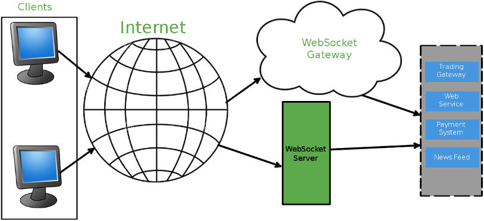

Qt WebSockets Overview
Qt WebSockets enables you to build WebSocket-aware applications. It provides an implementation for the WebSocket protocol, which is offered by IETF (Internet Engineering Task Force) as a better alternative for bidirectional communication using the existing web infrastructure.
Historically, web applications that needed bidirectional communication or push notifications had to use one of the HTTP-based solutions available. These solutions employed different techniques such as polling, long-polling, and streaming, to overcome the limitations of HTTP protocol, which is not designed for such use cases. As a result, high network latency, unnecessary data exchange, and stale or old data. The WebSocket offering by IETF helps to overcome these problems to a large extent.
How does it Work?

As you can see in the pictorial representation, WebSocket-based solution consists of a client-side and server-side. The native client-side support for WebSocket is available on most of the popular web browsers such as Google Chrome, Internet Explorer, Safari, and so on. The server-side support for WebSocket makes it a complete solution, enabling bidirectional communication. Any browser with native WebSocket support should let you run a simple HTML and JavaScript-based client application using the HTML5 WebSocket API.
A WebSocket connection begins with a initial HTTP-compatible handshake, which ensures backwards compatibility so that the WebSocket connections can share the default HTTP (80) and HTTPS (443) ports. On successful handshake, the connection is open for data exchange, until one of the two entities end the connection.
The WebSocket protocol uses ws: and wss: URL schemes to represent unsecure and secure WebSocket requests, respectively. During the initial handshake, if a proxy server is detected, the protocol tries to set up a tunnel by issuing an HTTP CONNECT statement to the proxy. The tunnel approach to handle proxies is used irrespective of the request type, although it is proved to work better with TLS (Transport Layer Security) in secure connections.
Typical Use Cases
WebSocket suits best for scenarios where,
- data presented must be up-to-date,
- low network latency and minimal data exchange is crucial.
A few example applications where we struggle to achieve these using the traditional approach are, instant messaging, online gaming, online stock trading, and so on.
Role of Qt WebSockets
The Qt WebSockets module provides APIs to develop WebSocket-based server and client applications. An example of where these APIs can be used is a server application that provides stock data, and a client application that registers for push notification when there is a change in price of a few stocks.
The module provides both C++ and QML versions of the API, so you can choose the alternative that suits your need.
Qt WebSockets with Cloud Services
The client application usually depends on an external service for data. Most of these service providers do not support WebSocket yet, so you end up developing a WebSocket-aware server application to bridge the gap. You can run the server on an enterprise WebSocket gateway service such as a cloud service, avoiding the hassle of maintaining the necessary infrastructure required to host such a service.
Most of the cloud Services provide a Platform as a service (PaaS) backend, which enables deploying and running an instance of your server application on the cloud. The client applications can connect to the running server using a WebSocket URL and receive data.